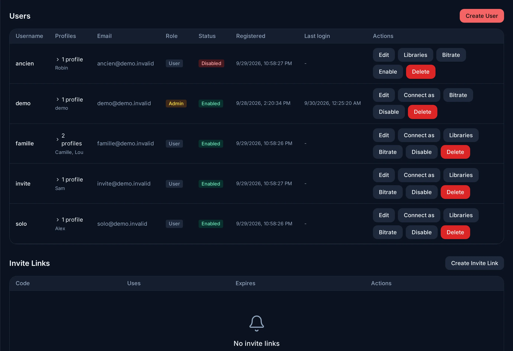

用户、个人资料和家长控制¶
本页有两个关键词：
- 账户用来登录：一个用户名加一个密码。
- 个人资料代表一个观看内容的人。每个个人资料都有自己的观看记录、续播位置、收藏、语言和首页。
一个账户可以有多个个人资料。大多数家庭共用一个账户，每人一个个人资料。您也可以为每个成年人单独创建一个账户。
本页先讲常见的操作：添加家人、添加孩子。更细的控制（每个账户的限制、开放时间、请求、首页、下载链接）放在后面。
账户和个人资料¶
账户有一个用户名和一个密码，或者通过单点登录来登录（见 OIDC）。账户要么是管理员，要么是普通账户。每个新账户一开始都有一个个人资料，名字和用户名相同。
创建账户¶

打开管理 → 用户。有两种方法。
发送邀请链接，让对方自己设置密码：
- 点击创建邀请链接。
- 可以选择加上限制：过期时间（可选）、最大使用次数（留空 = 无限制）、可访问的媒体库（新账户能看到的媒体库），以及它能创建的个人资料数量。只有对方要和您一起管理服务器时，才勾选创建为管理员。
- 在邀请链接下，点击复制链接，然后发给对方。
链接是根据您浏览器里的地址生成的。请用其他人会用的地址打开管理面板（例如 http://192.168.1.20:9091），不要用 localhost。撤销会让链接失效。
或者自己创建账户：点击创建用户，设定用户名和密码，再告诉对方。要创建管理员，请勾选管理员。您也可以马上设定媒体库、个人资料数量和设备数量（见管理员可以按账户限制什么）。
在账户那一行上：
- 禁用：阻止这个账户登录，但不删除任何东西。启用：让它重新可以登录。
- 删除：删除这个账户及其个人资料。
个人资料、儿童个人资料和 PIN 码¶
添加个人资料：在该账户里，打开设置 → 个人资料 → 创建个人资料。管理员也可以在编辑用户 → 新建个人资料里，给任何账户添加个人资料。个人资料有名称、语言和地区。
添加孩子的个人资料：
- 创建个人资料，勾选儿童个人资料。
- 选择最大年龄分级。如果保留默认（12+），上限就是 12 岁。
- 给这个账户的其他每个个人资料都设一个 PIN 码（4 位数字）。只要存在儿童个人资料，服务器就要求这样做，没有 PIN 码的个人资料无法保存。
孩子看到的情况：
- 打开儿童个人资料不需要 PIN 码。
- 从儿童个人资料切换到其他个人资料时，需要输入那个个人资料的 PIN 码。
- 超过年龄上限的内容永远不会出现（见年龄限制）。
PIN 码细节，以及谁能管理个人资料
- 第一次设置 PIN 码时需要输入账户密码。修改 PIN 码时需要输入当前的 PIN 码。设置 → 家长控制用来设置当前所用个人资料的 PIN 码。
- 只有在非儿童个人资料里，才能管理个人资料和家长控制设置。
- 管理员账户不能有儿童个人资料：否则年龄限制会隐藏管理员自己的一部分媒体库。
年龄限制¶
年龄限制由服务器执行，而不是由应用执行。超过上限的内容不只是在屏幕上被隐藏：它根本不会发给儿童个人资料。浏览、搜索、播放和下载都是如此。
- 采用哪种分级。 年龄取自个人资料所选地区的分级制度（设置 → 个人资料 → 编辑）。选择自动时，地区由个人资料的语言决定；如果语言也无法确定，就使用英国的分级制度。
- 没有可用分级的内容：对儿童个人资料隐藏，而不是显示。
- 无法确定时，一律拒绝。 如果服务器无法读取某个个人资料的设置（例如数据库出错），它会拒绝提供内容，而不是放行。
- 下载也一样。 下载到手机上的电影，离线时也保留年龄限制：如果另一个个人资料下载的内容超过儿童个人资料的年龄上限，儿童个人资料就无法打开它。
管理员不受个人资料限制的约束。
管理员可以按账户限制什么¶
这些设置位于创建用户和编辑用户里，以及管理 → 用户中该账户的那一行。
| 设置 | 作用 |
|---|---|
| 媒体库访问（那一行上的媒体库按钮） | 账户能看到的媒体库。其他媒体库对它来说在任何地方都不出现：搜索里没有，首页上也没有。管理员始终能看到全部。 |
| 最大码率（码率按钮） | 限制账户收到的视频质量，范围 1 到 40 Mbps（0 = 不限制）。超过上限的影片会被转换到这个码率。 |
| 最大个人资料数 | 账户最多能创建多少个个人资料（0 = 不限制）。 |
| 每个个人资料的最大设备数 | 每个个人资料在所有设备上最多能同时播放几个视频（0 = 不限制）。超出的那一个在开始播放时会被拒绝。 |
以此身份登录会让您看到该用户眼中的服务器，和他看到的完全一样。可以用它来检查某项限制，或直接查看某个问题。屏幕上会一直显示一条横幅，点击退出就回到您自己的账户。
开放时间¶
您可以让儿童个人资料只在特定时间段观看。
- 在设置 → 个人资料里，点击儿童个人资料旁边的时钟图标。
- 打开限制在开放时间内。Evey 会建议：工作日 18:00 到 22:00，周六和周日 9:00 到 12:00 以及 14:00 到 21:00。
- 调整时间。可以用工作日 / 周末（周一到周五一组，周末一组），也可以用逐日设置。
一天可以有多个时间段。一个时间段可以跨过午夜（20:00 到 0:30）。没有任何时间段的那一天就是关闭的。
会发生什么：
- 在开放时间以外，这个个人资料在所有地方都是关闭的：浏览、电影、音乐、下载。每个应用都会显示一个锁定画面，告诉孩子什么时候重新开放。
- 关闭前十分钟，播放器会显示提醒。到了关闭时间，播放停止。
- 想让孩子破例进入，请在锁定画面上输入家长 PIN：也就是同一账户里某个非儿童个人资料的 PIN 码。它会让儿童个人资料一直开放到下一个开放时段开始。孩子自己的 PIN 码在这里无效。切换个人资料会回到个人资料列表。
时区和特殊情况
- 服务器按自己的时区执行开放时间：管理 → 服务器配置 → 语言和地区 → 服务器时区（留空时用
TZ变量，再没有就用 Europe/Paris）。修改平板上的时钟没有任何作用。 - 如果某一组里各天的时间不同，就不能从逐日设置切回工作日 / 周末，这样不会意外丢失设置。
- 服务器无法读取的时间表会让个人资料保持关闭。
- 在没有网络时播放已下载的电影，根本不会经过服务器，所以开放时间对它不起作用。
请求¶
用户可以请求您还没有的电影、电视剧或艺人。请求会出现在管理 → 媒体请求里。对每一条，选择批准、拒绝或稍后处理，需要的话再加一句备注。对方会收到您答复的通知。
要决定谁可以发起请求，请打开访问权限标签页：先设置默认允许所有用户发起请求，再在按用户设置里设定例外。
首页¶
首页由一行一行的内容堆叠而成。没有内容可显示的行会被隐藏。
| 行 | 显示什么 |
|---|---|
| 继续播放 | 这个个人资料开始看了但还没看完的内容，最近的排在前面。看到 90% 就算看过。 |
| 即将播放 | 这个个人资料已经开始看的每部电视剧中，下一集还没看的剧集。 |
| 合集 | 合集，并附有完整列表的链接。 |
| 为您推荐 | 这个个人资料最常看的流派中的电影和电视剧，最匹配的排在前面，然后按评分排序。某个流派在这个个人资料最近 200 次播放中出现至少 3 次，才算数。 |
| 最受欢迎 | 最近 90 天在服务器上播放次数最多的电影和电视剧。 |
| 每个媒体库一行 | 这个媒体库里最新添加的内容，最新的排在前面。 |
为您推荐和最受欢迎不显示这个个人资料已经看完的内容。电视剧要每一集都看过，才算看完。插件可以添加自己的行。
由谁决定显示哪些行：
- 您在管理 → 服务器配置 → 首页信息流里为所有个人资料设定默认值：显示哪些行、按什么顺序、每行显示多少个条目。
- 之后，每个个人资料都可以用自定义来安排自己的首页（网页版和手机应用在首页上，电视应用在顶部栏里）：显示或隐藏某一行、移动它，或者恢复默认。这些设置保存在服务器上，在这个个人资料的每台设备上都会生效。
- 个人资料可以显示您隐藏的行，但插件的行除外：插件的行以您的选择为准。
公开下载链接¶
在电影或剧集页面上，管理员可以创建一个公开下载链接（网页版和 Android 应用）。任何拿到链接的人都可以下载原始文件，不需要账户。链接会被复制，供您粘贴。
- 48 小时后失效。
- 如果关闭了远程访问，它只在您的家庭网络里有效。
- 在过期之前，拿到链接的人都能下载文件：请像对待文件本身一样谨慎地分享它。
通过服务器 API
只有管理员可以创建、列出和撤销链接。应用只能创建链接；列出和撤销要通过 API（GET /api/v1/admin/share-links、DELETE /api/v1/share-links/{id}）。通过 API，链接最长可以保留 72 小时，并可以限制下载次数（POST /api/v1/media/{id}/share）。